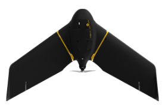
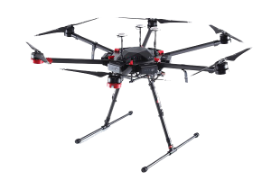
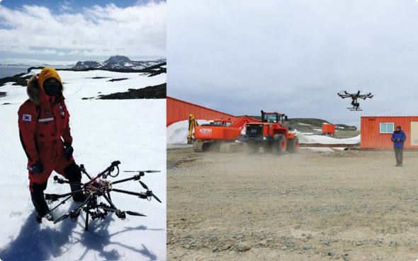
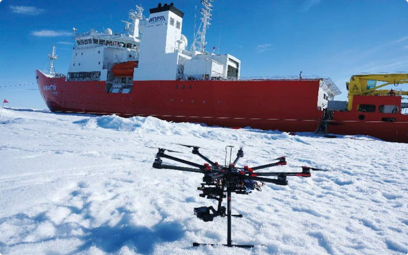
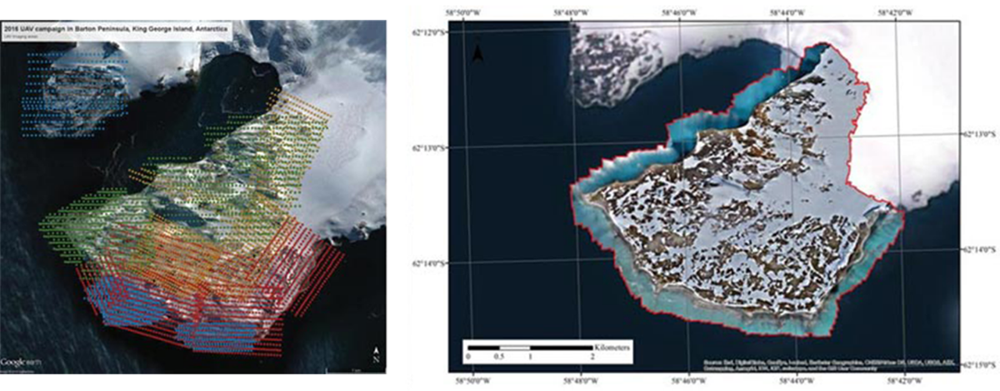
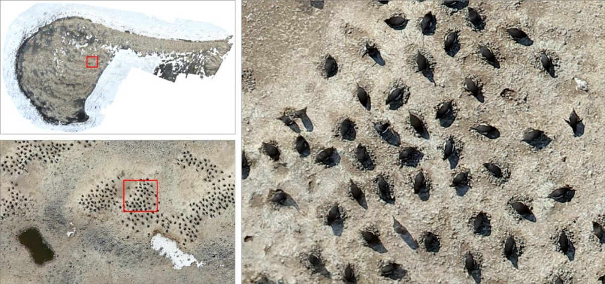
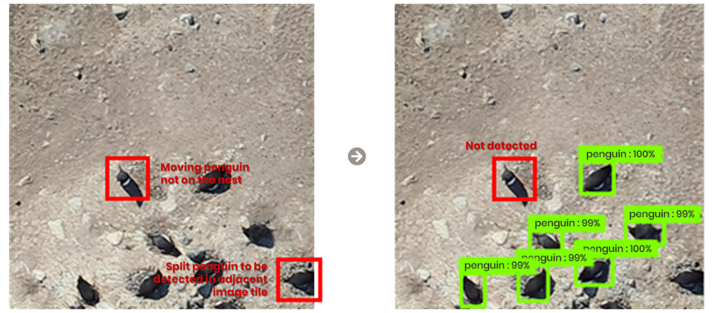
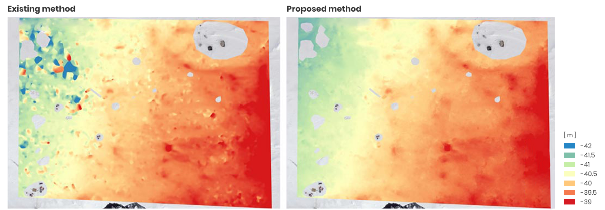

-
STAR소개

-
STAR소식
-
원격탐사
-
극지관측
-
관련사이트
무인기 원격탐사 지상에서 원격 제어 또는 사전 입력된 비행계획을 통해 고해상도 자료 획득이 가능한 원격 탐사입니다.
- 무인기(Unmanned Aerial Vehicle, UAV)는 지상에서 원격 제어 또는 사전 입력된 비행계획을 통해 수 mm에서 수십 cm의 고해상도 자료 획득이 가능한 원격탐사 플랫폼
- 유인항공기 및 인공위성과 같은 기존 원격탐사 플랫폼들과 비교하여 운용이 쉽고 촬영시기 선정이 용이함
- 무인기 획득 자료는 높은 공간해상도를 바탕으로 관심지역의 정밀분석 또는 인공위성 자료 검보정에 활용 가능
- 무인기는 형태에 따라 고정익(fixed wing)과 회전익(rotary wing)으로 분류
고정익 [ SenseFly eBee X ]

| 장점 | 장거리, 장시간 임무수행 가능 넓은 지역에 대한 자료 취득 용이 |
|---|---|
| 단점 | 이착륙을 위해 넓은 개활지 필요 중대형 센서 탑재가 어려움 공중정지비행(hovering) 불가능 |
회전익 [ DJI Matrice 600 Pro ]

| 장점 | 수직 이착륙 및 공중정지비행 가능 다양한 센서 탑재 가능 |
|---|---|
| 단점 | 짧은 비행시간으로 촬영 반경 제한적 바람 영향에 민감 |
탑재 센서로는 일반 광학카메라, 다중분광카메라, 초분광카메라, 열화상카메라, LiDAR(light detection and ranging), SAR(synthetic aperture radar) 등 기존 원격탐사 플랫폼에서 사용되던 대부분의 센서들이 사용 가능
- 무인기는 최초 군사목적으로 활용되었으나 최근에는 물류, 시설물 관리, 감시/구조/수색 등 민간분야에서 폭넓게 사용되고 있으며, 연구분야에서도 지구환경 전반에 걸쳐 확대되고 있음
- 특히, 극지의 경우에는 기후, 지질, 해양, 해빙/빙하, 동식물 생태 등 많은 분야에서 무인기 원격탐사 활용이 크게 늘고 있음
세종기지 인근 무인기 운용

해빙캠프 무인기 운용

-
세종기지 주변 바톤반도 식생분포 조사
 -
무인기를 활용한 아델리펭귄 둥지 공간분포 조사 (2017. 06 ~ 현재)
아델리펭귄 둥지 모니터링을 위해 남극 로스해 Cape Hallett, Inexpressible Island 지역을 중심으로 무인기 영상을 취득하여 수치표고모델 및 모자이크 영상 제작 시기별 변화 양상을 파악하기 위해 여러 시기에 취득된 자료를 registration하여 비교 분석 -
무인기 영상 활용 아델리펭귄 개체수 산정 방법 개발 (2017. 06 ~ 현재)
무인기 영상으로 제작한 모자이크 영상을 이용하여 아델리펭귄의 개체수를 자동으로 산정할 수 있는 합성곱 신경망 기반 방법 개발 펭귄을 탐지함에 있어 개체와 둥지를 모두 고려하고, 또한 이동 개체는 탐지 결과에서 제외시킬 수 있도록 함으로써 높은 수준의 탐지 정확도 달성 -
무인기 영상을 이용한 고품질 해빙표면모델 생성 방법 개발 (2017. 09 ~ 현재)
고품질의 해빙표면모델을 얻기 위해 요구되는 주요 고려사항을 도출하고 이를 통해 효과적으로 해빙표면모델을 생성할 수 있는 방법 개발 신뢰성 있는 결과를 얻기 위해서는 영상정합 과정에 있어 해빙에 최적화된 정합비용과 탐색창, 그리고 정합의 불확실성 등이 반영되어야 함을 확인 Kim, J., Hyun, C., Han, H., and Kim, H., 2019, Evaluation of matching costs for high-quality sea-ice surface reconstruction from aerial images, Remote Sensing, 11(9):1055 도출된 고려사항들을 반영하여 해빙표면모델 생성 방법을 수립한 결과, 기존 방법과 비교하여 크게 향상된 결과 산출이 가능함을 확인